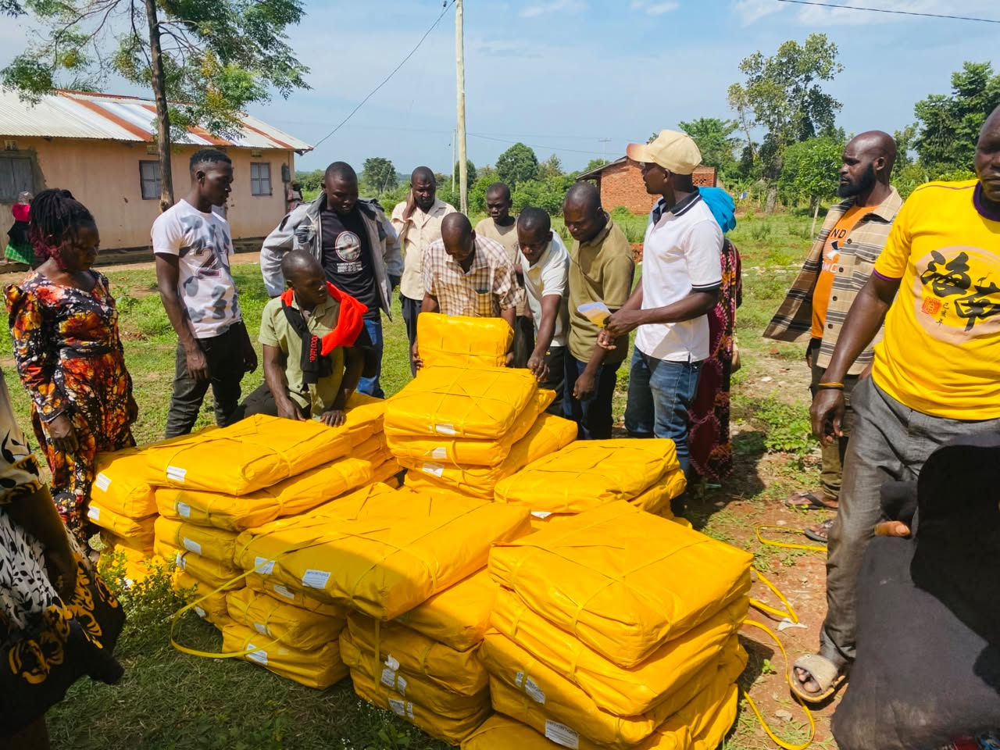
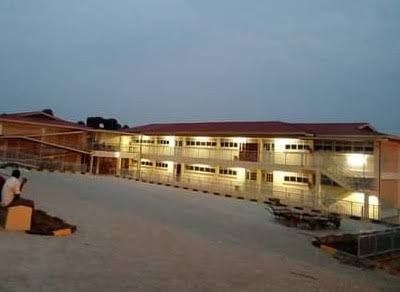
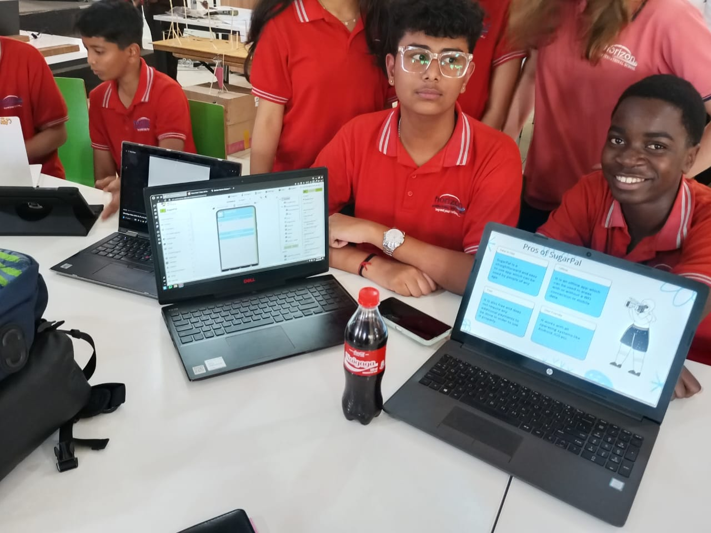
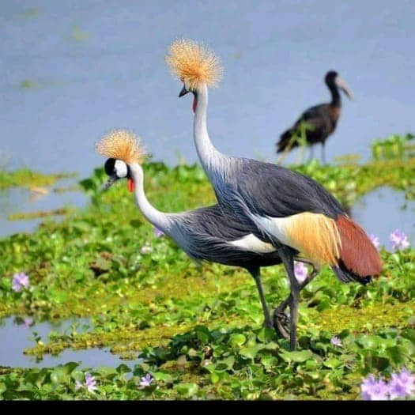

UNIVERSITY | FORT PORTAL, UGANDA
Transforming Communities Through Quality Education, Research, Innovation and skillful education.
Explore Programmes Discover MMUMountains of the Moon University is a public university located in Fort Portal, Uganda. Established as a community university in 2005, it became a public university in 2022. The university focuses on quality education, research, innovation and community transformation.
Prof. Pius Coxwell Achanga
Professor Pius Coxwell Achanga is the Vice Chancellor of Mountains of the Moon University (MMU), having been appointed to the position in September 2022. Before this, he chaired a task force appointed by the Honorable Minister of Education and Sports in January 2019, to oversee the transition of MMU from a private Chartered University to Public status, when the Memorandum of Agreement was signed between the Government of the Republic of Uganda and the Board of Directors of MMU private Chartered University in January 2022, for the takeover of MMU, as a Public University.
Promoting sustainable agriculture and environmental conservation.
Preparing competent and professional educators.
Developing technological skills and scientific knowledge.
Supporting health education and professional development.
Developing business and management professionals.

Promoting social development and human understanding.

Undergraduate Programme
Undergraduate Programme

Undergraduate Programme
Undergraduate Programme
Undergraduate Programme

Diploma Programme
Are you interested in joining Mountains of the Moon University? Explore the available academic programmes and admission information.
Visit Official WebsiteDiscover university research, student achievements, innovation and community engagement.
Read University NewsAddress: P.O. Box 837, Fort Portal, Uganda
Telephone: +256 750 933490
Email: info@mmu.ac.ug
Location: Lake Saaka Campus, Fort Portal